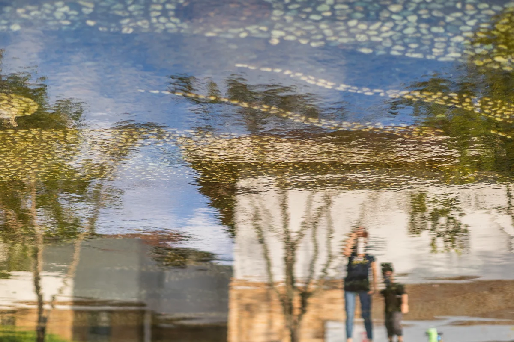

Il titolo è una descrizione scritta da un'IA dopo la sua morte
Guardala nella mostra in 3D Scarica il file originale

Come citare
Yumok (流木) Lee Dong-joo, «Fotografo nell'acqua», 2021. CC BY 4.0, seungheon.com
Fotografie di luce d'acqua di Yumok
Bungeoseom, lago Okjeong, Imsil · 2021
Riflesso
Il titolo è una descrizione scritta da un'IA dopo la sua morte
Guardala nella mostra in 3D Scarica il file originale
Yumok (流木) Lee Dong-joo, «Fotografo nell'acqua», 2021. CC BY 4.0, seungheon.com